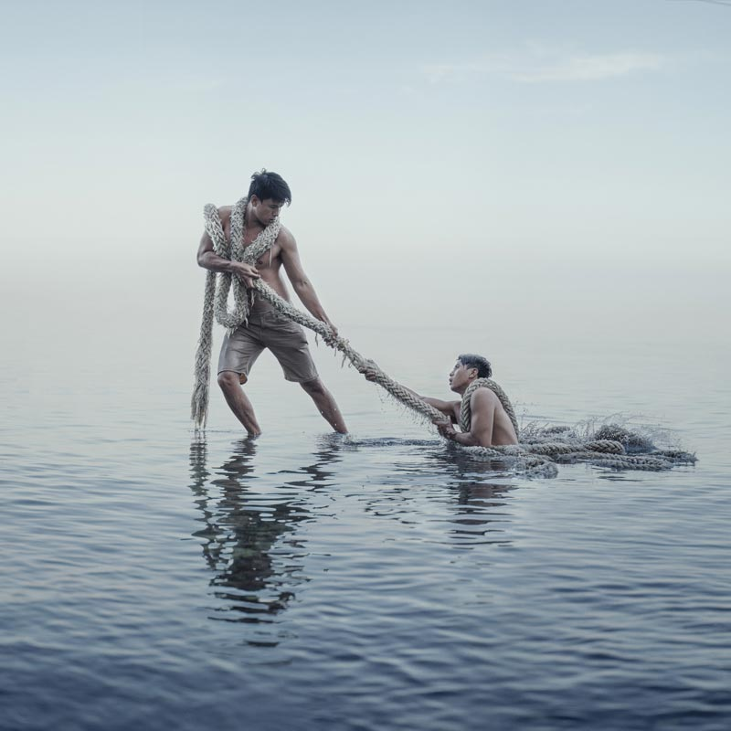
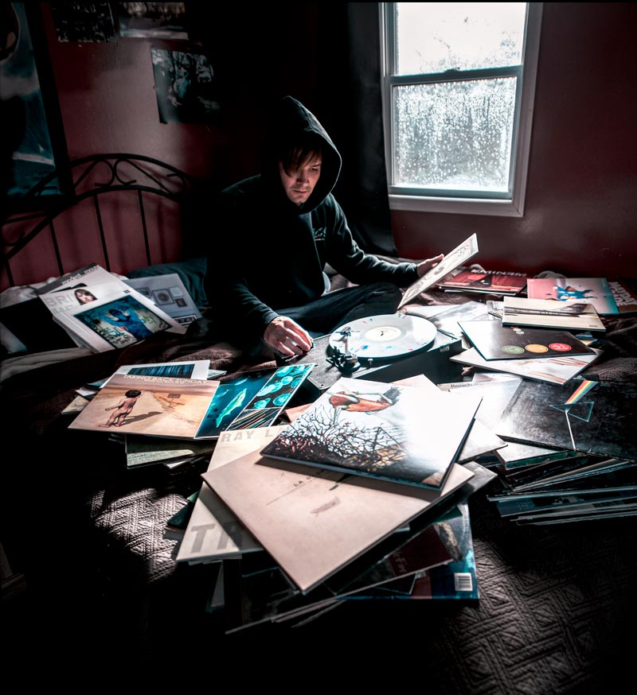
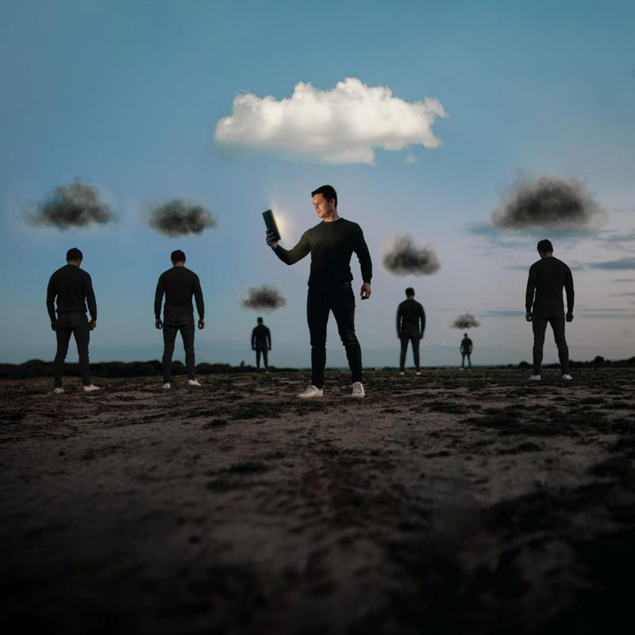
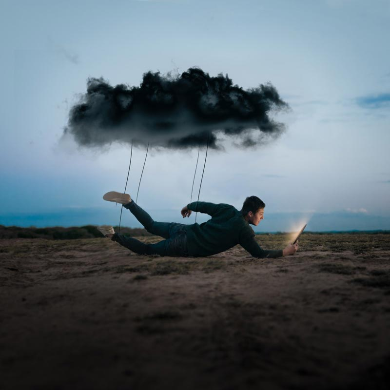
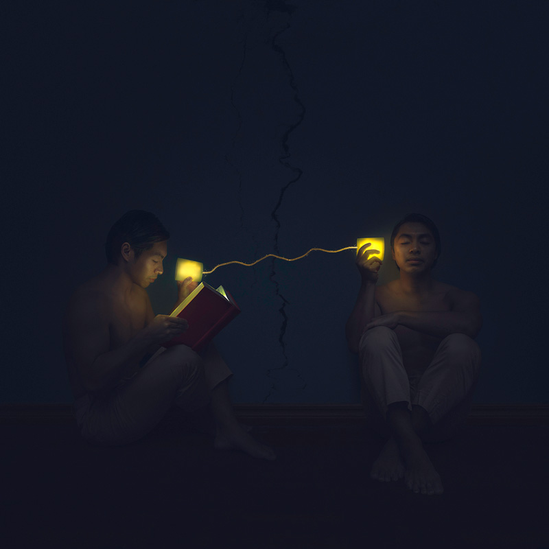

Tackling Isolation to Fight Depression
A lot of guys avoid talking about mental health, even during Mens Health Week, but keeping things bottled up doesn’t work.
A lot of guys avoid talking about mental health, even during Mens Health Week, but keeping things bottled up doesn’t work.
"Staying connected is more important than ever."
A lot of guys avoid talking about mental health, even during #MensHealthWeek, but keeping things bottled up doesn’t work. With the extra stress caused by the COVID-19 pandemic, it’s more important than ever to put in the effort to look after our mental health.
Fortunately, there are many ways to reach out and fight back against depression. Though it may take a bit more effort right now, staying socially connected is one of those ways.
To reinforce the message of staying connected and tackling isolation, we’ve collaborated with concept photographers around the world to create the images below.

“Mental health shouldn’t be a battle that we have to fight by ourselves. One of the things that has helped me greatly was having people to reach out to. You could say that “staying connected” lifted me up. It’s like having a lifeline when you’re being pulled into the darkness or being weighed down by heavy burdens, since having these connections with loved ones, friends or someone I trust helps me pull through with whatever I’m going through.
Even to this day I always remind myself, ‘you don’t have to do this on your own, you don’t have to bear everything. And don’t forget that there are people willing to pull you out when you’re drowning.'”
– Mike Alegado, conceptual and portrait photographer, Manila, Philippines.
Spontaneous Creation
“I love the concept of inspiration – ideas suddenly forming from the influence of an external, usually new element. Creation is such a unique journey, and one that often requires exploration and change. The power of inspiration multiplies when we come together and share our ideas- connection becomes our power. May we all have the courage to explore and embrace change and new connections- it’s the only way new ideas can be created.”
– Rob Woodcox, surreal portrait and fine art photographer, Oregon, United States.
We Are Particles
“‘We Are Particles’, intricately connected to everything around us – earth, water, air and spirit intertwine to tell us the story of a million years that came before. Will we protect this sacred ground or give in to the weight of complacency. United we hold the fate of tomorrow, we are important, strong, capable of immense change. Let us stand in the strength of togetherness, with compassion and love as our greatest weapon. We are particles sewn together, elements and spirit. We are the universe and the universe is us.”
– Rob Woodcox, surreal portrait and fine art photographer, Oregon, United States.

Staying Connected
“During these last few months music has been a constant. A day hasn’t gone by without playing an album on the computer, a record on the player or having headphones in. Music for me is truly a blessing and something I’m so grateful for.
Artists in the music industry have also stepped up by hosting live concerts on their FB / IG stories, releasing new music and just staying positive and connected to their fans.”
– Paul Warren, creative content creator and event photographer, Long Island, New York. 

Freedom in Boundaries
“Staying socially engaged with others is key, but sometimes this requires setting up boundaries to preserve our own individual beliefs and limits. By staying connected we can grow side by side, stronger bounded together yet still with our own volition and freedom.”
– Vincent Minor, conceptual fine art photographer, San Francisco, United States. 

“Checking in with other people through social media and sharing important parts of our day and lives, for many is like a form of therapy. It can be a good way to feel more connected and create a sense of community. When used mindfully it can actively spread social awareness, kindness and develop increased self-confidence. It’s a great way to empower introverts to express their ideas.”
– Ben Hughes, Wrexham, concept photographer, North Wales, UK. 

“I created this image to show how staying connected can keep you from the darkness which comes from isolation and loneliness.”
– Ben Hughes, Wrexham, concept photographer, North Wales, UK. 
“Staying connected these days is more important than ever before. With everything going on in the world, it’s easy to feel isolated and alone, like we’re stuck on an island separated from the people we love. The distance can be overwhelming, and the only relief is constant connection. We must make sure we check up on each other, reach out, and let people know we miss them. Connection will heal our hearts and minds, and bring us just a little bit closer.”
– Chris Gray, wedding and portrait photographer, Sydney, Australia. 

Stay On The Line
“This image is about discovering within yourself, the things that make you truly happy. The things that bring peace and calmness. I’ve learned that staying connected to the right people and staying connected to positive interests, plays an important role in improving my mental health.”
– Adam Hague, conceptual self portrait artist and photographer, Brunei and UK.
“Oftentimes when I’m feeling overwhelmed, I tend to isolate away from others. I stopped communicating to my friends and loved ones and tried to fix whatever was going wrong on my own. Over time, I’ve realized that this isn’t beneficial to myself, nor is it a good way to keep my own connections with others strong.
I’m lucky to have friends and loved ones who check in often, who give me a reason to stay connected and to make sure that I’m checking in on myself. And I hope they feel that the connection is mutually beneficial, that I’m there to help them and listen and bridge the gap.”
– Joel Robison, conceptual photographer, British Columbia, Canada. 
“It is true what they say, distance means so little when someone means so much. Though we may not be able to meet in person at this time, through phone and video calls, email and messaging apps, we can travel worlds to reach each other.”
– James Lynd, portrait photographer and digital artist, Manchester, England.
A huge thanks to all the photographers who helped create and share these images in support of our Men’s Health Week 2020 campaign.
Move for something that matters! Between June 1–15, walk, run, bike, or hike for men's mental health.
Let's Step Up for our dads, brothers, partners, sons, uncles, friends, co-workers — and ourselves.